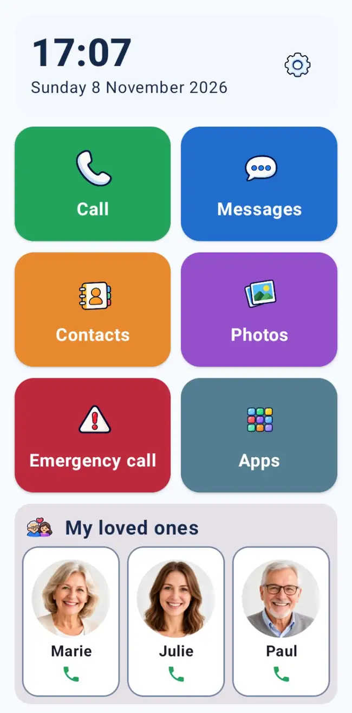
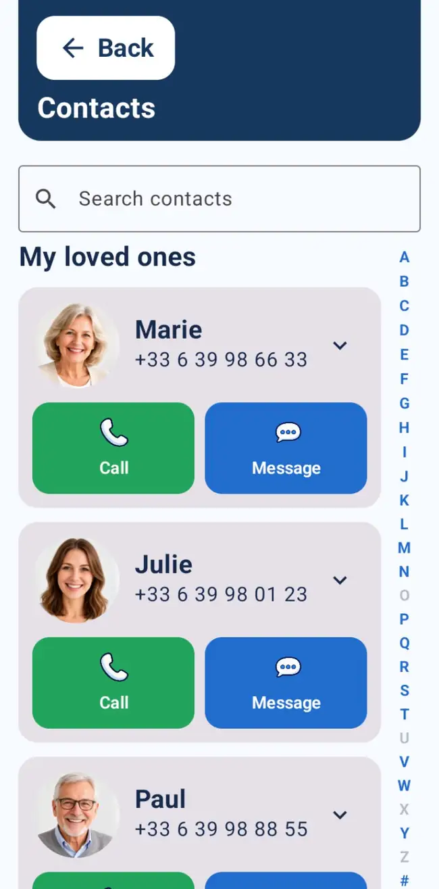

홈 화면의 큰 버튼
전화, 메시지, 연락처, 사진, 카메라, 긴급 연락이 주요 버튼입니다. 가족 모드에서 표시 항목과 순서를 선택할 수 있습니다.

전화 걸기 및 통화 기록 보기
전화 메뉴에서 키패드, 즐겨찾기 또는 최근 통화를 이용합니다. 번호나 연락처를 선택해 전화하세요. 앱 내 통화 기록에는 기본 전화 앱 설정과 필요한 권한이 필요합니다. 그렇지 않으면 기존 전화 앱이 열릴 수 있습니다. 수신 전화의 큰 버튼도 기본 전화 역할이 필요합니다.

사진으로 가족이나 지인에게 전화하기
가족 모드에서 사람을 추가한 후 홈 화면의 사진을 눌러 전화하세요. 설정에 따라 한 줄에 1~3명을 표시할 수 있습니다. 프로필 사진은 Android 연락처에서 등록하거나 변경합니다.

메시지: 기존 메시지 앱 사용하기
메시지 버튼은 Google Messages 또는 Samsung Messages 등 현재 SMS/RCS 앱을 엽니다. ClikoSpido가 대화를 직접 관리하지는 않습니다. 연락처에서 수신 번호가 미리 입력될 수 있으며 메시지는 직접 작성하고 보내야 합니다.
사진과 카메라
사진 버튼은 호환 갤러리를, 카메라 버튼은 Android 카메라를 엽니다. 사진은 기존 앱에 그대로 유지됩니다.
긴급 연락: 가까운 사람에게 연락하기
빨간 버튼으로 지정된 사람에게 전화하거나 긴급 SMS를 준비할 수 있습니다. 가족 모드의 긴급 연락 설정에서 수신인과 문구를 지정합니다.
공식 긴급 구조 서비스의 대체 수단이 아닙니다. 실제 긴급 상황에는 지역 긴급 전화번호로 연락하세요. SMS는 자동으로 전송되지 않으며 메시지 앱에서 보내기를 눌러야 합니다.
다른 앱 열기
앱 페이지에는 선택한 바로가기가 표시됩니다. 바로가기를 제거해도 앱이 삭제되거나 Android 전체에서 차단되는 것은 아닙니다. 가족 모드의 허용된 앱에서 선택하세요. 일부 설정은 Premium이 필요합니다.